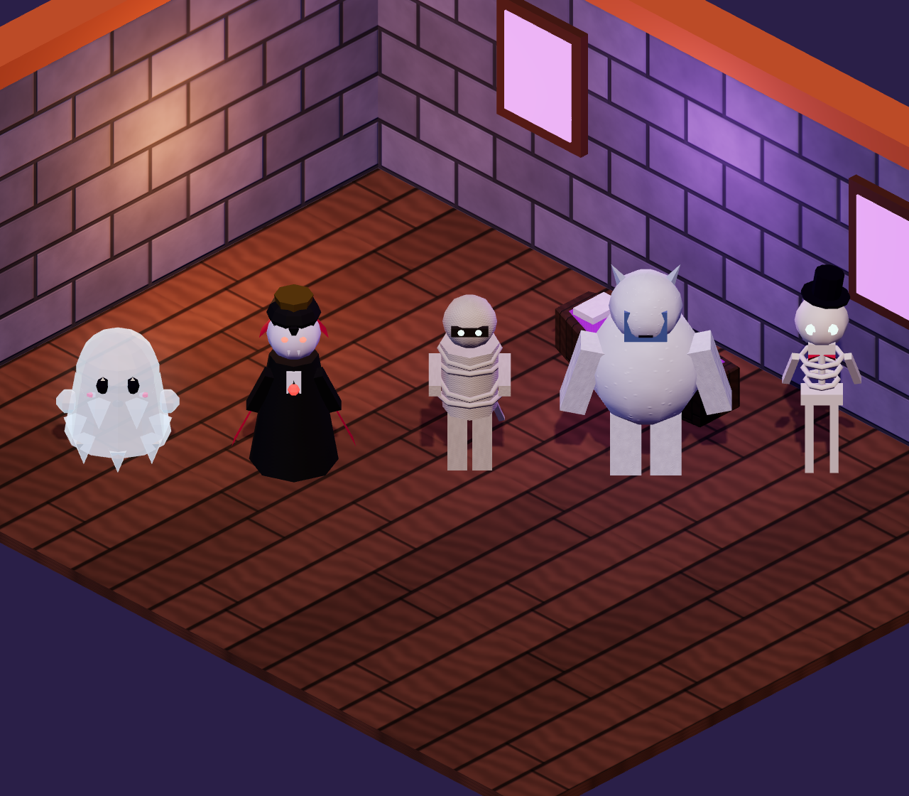
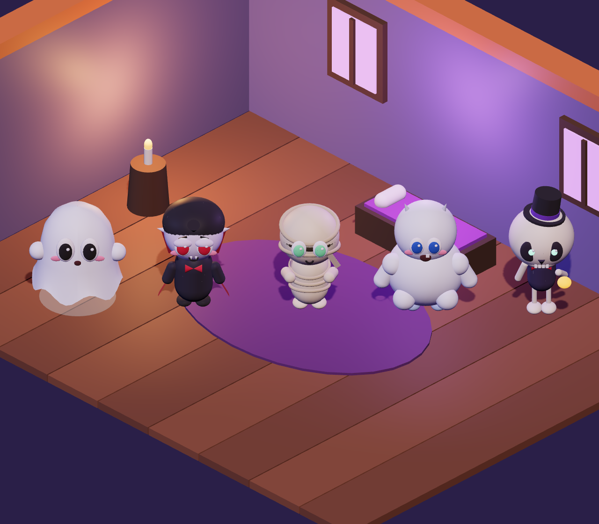
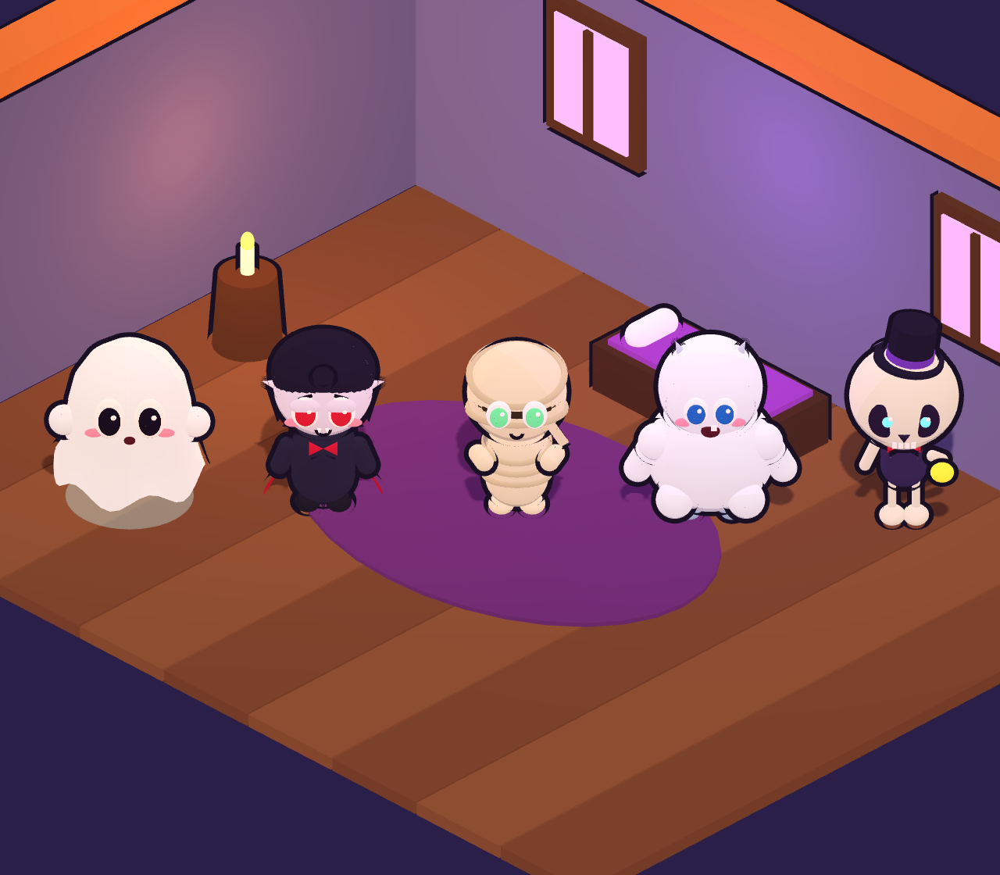

A · Low-Poly (aktuell)Alte Figuren, facettiert – wirkt technisch, wenig Persönlichkeit

B · Soft 3DNeue Chibi-Figuren, weich beleuchtet – edel, aber auf kleinen Displays weniger lesbar
C · Chibi-Toon ★ EmpfehlungCel-Shading + feine Kontur – Genre-Standard, sehr gut lesbar, günstig zu rendern

D · Cartoon-InkHarte Schatten, dicke Kontur – Richtung Jetpack Joyride, sehr comichaft